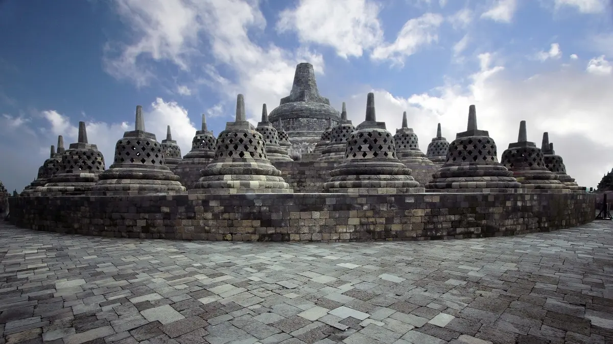

Yogyakarta

Daerah Istimewa Yogyakarta, disingkat DI Yogyakarta atau DIY, adalah daerah Istimewa setingkat provinsi di Indonesia yang merupakan peleburan dari Negara Kesultanan Yogyakarta dan Negara Kadipaten Paku Alaman dengan ibu kota di Kota Yogyakarta.
Selain dari segi otonomi daerah, Yogyakarta atau Jogja memiliki keistimewaan lain berupa kota dengan banyak warisan budaya dan bangunan bersejarah. Banyak budaya yang ada di Yogyakarta atau Jogja yang menjadi ciri khas kota tersebut, seperti kesenian membatik.